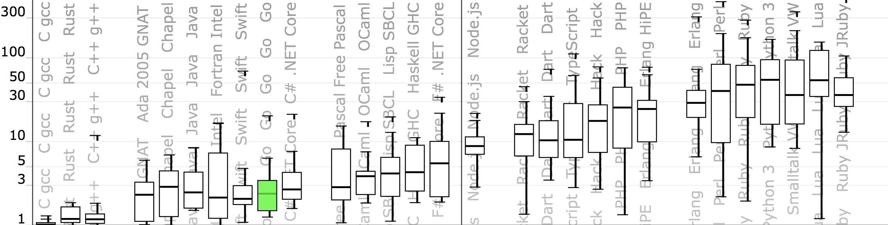
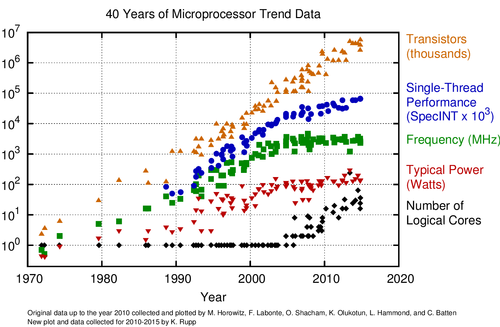
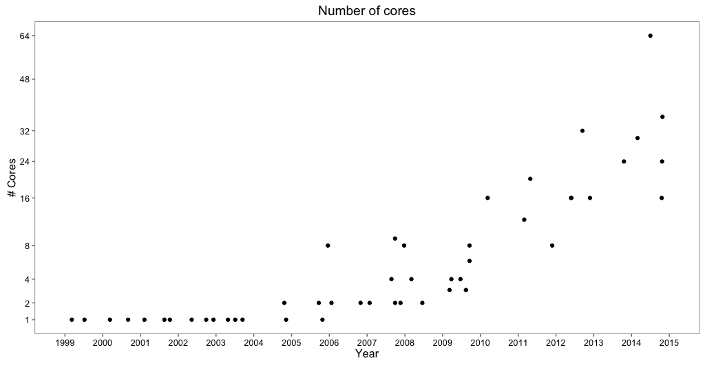
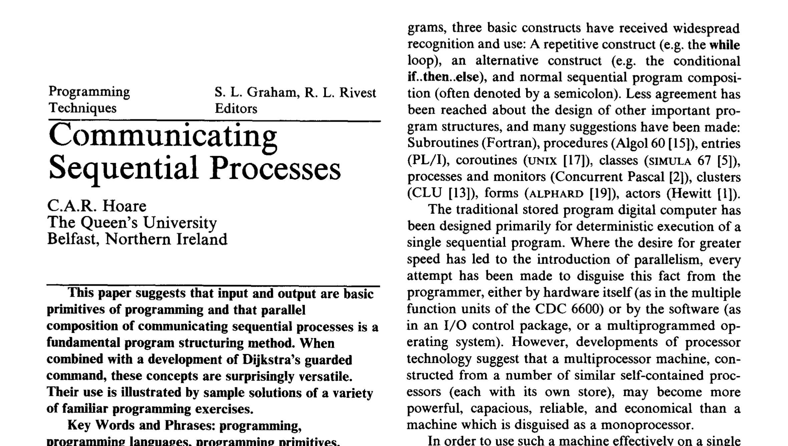
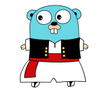

Visualizing Concurrency in Go
Murcia Meetup Day, May 20, 2017
Ivan Danyliuk, @idanyliuk
What is Go?
- made by Google
- open-sourced in 2009
- static-typed, compiled
- "system" language

What is Go?
- garbage collected
- simplicity
- only 25 keywords
- sub-second compilation
- designed for scale
What is Go?
- OOP, but no classes
- built-in test/format/docs
- opinionated
- unusually cool stdlib
How fast is Go?
http://benchmarksgame.alioth.debian.org/u64q/which-programs-are-fastest.html
Who uses Go?
- servers/microservices
- databases
- cloud software
- infrastructures
- blockchain stuff
Go makes programming fun again
DevOps love Go
- super easy deployment
- cross-compilation
- simplicity
- tooling
Concurrency
What is
concurrency
- a way to structure the program
- in a decomposable way
Concurrency
is not parallelism
- concurrency is a design technique
- parallelism is an optimization technique

40 years of CPU
CPU cores trend
Concurrency
is hard
CSP by Tony Hoare
CSP by Tony Hoare
Do not communicate by sharing memory;
share memory by communicating.
Go Concurrency
- goroutine
- channel
Goroutine
- is a lightweight 'process'
- just prefix func with 'go'
- similar to '&' in UNIX
go foo()
Channel
- allows passing messages between goroutines
- similar to pipe in UNIX
// send 42 to channel ch <- 42 ... // read 42 from channel val := <-ch
Go concurrency
- Run new logical 'thread' - 3 characters
- Create pool of goroutines - 3 lines of code
- Correctness - automatically
Concurrent programming
has never
been easier
New questions
- How do we teach it?
- How we build more complex abstractions?
- How we build concurrent pipelines?
- How do we understand it, after all?
Gotrace
Tool for visualizing Go concurrency using WebGL:
Hello, world!
package main func main() { ch := make(chan int) go func() { ch <- 42 }() <-ch }
Hello, world!
Timer
func tick(d time.Duration) <-chan int { c := make(chan int) go func() { time.Sleep(d) c <- 1 }() return c } func main() { for i := 0; i < 24; i++ { c := tick(100 * time.Millisecond) <-c } }
Timer
Ping-pong
func main() { var Ball int table := make(chan int) go player(table) go player(table) table <- Ball time.Sleep(1 * time.Second) <-table } func player(table chan int) { for { ball := <-table ball++ time.Sleep(100 * time.Millisecond) table <- ball } }
Ping-pong
Ping-pong #3
func main() { var Ball int table := make(chan int) go player(table) go player(table) go player(table) table <- Ball time.Sleep(1 * time.Second) <-table } func player(table chan int) { for { ball := <-table ball++ time.Sleep(100 * time.Millisecond) table <- ball } }
Ping-pong #3
Ping-pong #36
func main() { var Ball int table := make(chan int) for i := 0; i < 36; i++ { go player(table) } table <- Ball time.Sleep(1 * time.Second) <-table } func player(table chan int) { for { ball := <-table ball++ time.Sleep(100 * time.Millisecond) table <- ball } }
Ping-pong #36
Messaging patterns
Fan-in
func producer(ch chan int, d time.Duration) { for { ch <- i time.Sleep(d) } } func reader(out chan int) { for { <-out } } func main() { ch, out := make(chan int), make(chan int) go producer(ch, 100*time.Millisecond) go producer(ch, 300*time.Millisecond) go reader(out) for { out <- <-ch } }
Fan in
Servers
func handler(c net.Conn) { c.Write([]byte("ok")) c.Close() } func main() { l, err := net.Listen("tcp", ":5000") if err != nil { panic(err) } for { c, err := l.Accept() if err != nil { continue } go handler(c) } }
Servers
Servers
func handler(c net.Conn, ch chan string) { ch <- 11 // something c.Write([]byte("ok")) c.Close() } func main() { l, err := net.Listen("tcp", ":5000") if err != nil { panic(err) } ch := make(chan string) go logger(ch) go server(l, ch) select{} }
func logger(ch chan int) { for { fmt.Println(<-ch) } } func server(l net.Listener, ch chan int) { for { c, err := l.Accept() if err != nil { continue } go handler(c, ch) } }
Servers
Workers / Fan-out
func main() { var wg sync.WaitGroup wg.Add(36) go pool(&wg, 36) wg.Wait() } func pool(wg *sync.WaitGroup, n int) { tasks := make(chan int) for i := 0; i < n; i++ { go worker(tasks, wg) } for i := 0; i < 50; i++ { tasks <- i } close(tasks) }
func worker(tasks <-chan int, wg *sync.WaitGroup) { defer wg.Done() for { task, ok := <-tasks if !ok { return } d := time.Duration(task) * time.Millisecond time.Sleep(d) fmt.Println("processing task", task) } }
Workers
Subworkers
Server+Worker
Concurrent prime sieve
package main import "fmt" func main() { ch := make(chan int) go Generate(ch) for i := 0; i < 10; i++ { prime := <-ch fmt.Println(prime) out := make(chan int) go Filter(ch, out, prime) ch = out } }
func Generate(ch chan<- int) { for i := 2; ; i++ { ch <- i } } func Filter(in, out <-chan int, prime int) { for { i := <-in if i%prime != 0 { out <- i } } }
Concurrent prime sieve
GOMAXPROCS = 1
GOMAXPROCS = 24
Goroutines leak
Goroutines leak
Go Concurrency Tracer
- It's open-source
- github.com/divan/gotrace
- Uses go execution tracer (go tool trace)
- Requires patched Go (or pre-made docker images)
- (Kind of) language agnostic
Links
Golang Murcia Meetups
https://www.meetup.com/Gophers-Murcia/
Thank you
Twitter: @idanyliuk
Github: divan